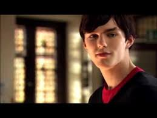

First Generation

Tony Stonem (Nicholas Hoult) is an attractive, intelligent and popular boy. His manipulative ways often go unnoticed by many, and are a catalyst for the majority of the events in the series. Sid Jenkins (Mike Bailey) is Tony's best friend and has an entirely opposite personality. He lacks confidence, is socially uneasy and struggles with school work. Tony's girlfriend is Michelle Richardson (April Pearson), a girl who can never stay angry at his mischievous behaviour for long. Outwardly, Michelle appears shallow, vain and conceited, but she works hard, has a strong interest in French and Spanish, and is very emotionally mature. She is friends with Cassie Ainsworth (Hannah Murray), an eccentric girl who suffers from an eating disorder. Cassie attempts to hide her own struggles with mental health while her flamboyant parents ignore her in favour of their new baby.
Chris Miles (Joe Dempsie) is the party animal of the group. He has a difficult home life; he lost his brother to a hereditary subarachnoid haemorrhage at a young age, and is living alone due to his ambivalent father and absent mother. He has a crush on his psychology teacher Angie (Siwan Morris). Jal Fazer (Larissa Wilson) is a sensible girl with a talent for playing the clarinet. Her runaway mother has left Jal with her famous musician father and aspiring rapper brothers. She is best friends with Michelle. Maxxie Oliver (Mitch Hewer) is openly gay and has a passion for dance. He is portrayed as attractive, seductive and talented, and is well accepted by most of his friends and family. His best friend Anwar Kharral (Dev Patel) has a slightly off-the-wall personality and is known for his silly antics and sense of humour. While he takes a pick-and-choose approach to Islam, and has no qualms about indulging in premarital sex and usage of alcohol and drugs in spite of his religion's policies against them, he has some difficulty fully accepting Maxxie's sexuality. Appearing only in the second series, Lucy, better known as "Sketch" (Aimee-Ffion Edwards), is a quiet and scheming Welsh girl who is polite yet unnerving. Living two buildings over and having a clear view of his room, she develops an obsession for Maxxie and becomes his stalker. Without her father, she is a young carer for her mother Sheila, who suffers from multiple sclerosis.
As well as the regular cast, there are several important recurring characters. Effy Stonem (Kaya Scodelario) is Tony's younger sister, and shares many of her brother's qualities. She is mysterious and manipulative, and selectively mute during the first series; she regularly breaks the fourth wall. Abigail Stock (Georgina Moffat) is an upper class school girl with sociopathic tendencies, and one of Tony's many sexual conquests. "Posh" Kenneth (Daniel Kaluuya) goes to the same college as the main cast and often spends time with the boys. Madison "Mad" Twatter (Stephen Walters) features as Sid's emergency drug dealer, Doug (Giles Thomas) is a senior teacher at Roundview College, and British comedian and co-writer Josie Long appears as the college's careers counsellor.
The central cast's parents are often played by well-known British actors credited in a guest starring role. Harry Enfield and Morwenna Banks act as Tony and Effy's parents, Jim and Anthea Stonem. Peter Capaldi and Josie Lawrence act as Sid's parents, Mark and Liz Jenkins. Arabella Weir acts as Michelle's mother, Anna Richardson, and Danny Dyer as her stepfather, Malcolm. Neil Morrissey and Naomi Allisstone act as Cassie's parents, Marcus and Margeritte Ainsworth. Mark Monero acts as Jal's father, Ronny Fazer, and (Josette Simon) as her estranged mother, Elaine. Inder Manocha and Nina Wadia act as Anwar's parents, Istiak and Bibi Kharral. Bill Bailey and Fiona Allen act as Maxxie's parents, Walter and Jackie Oliver. Mark Heap acts as Chris' estranged father, Graham Miles, and Sarah Lancashire as his stepmother, Mary Jane.
 menu
menu